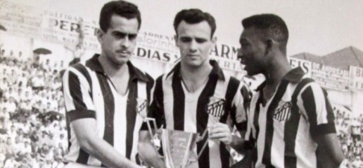

Site Antigo
O Santos Futebol Clube foi fundado por iniciativa de três esportistas da cidade, Francisco Raymundo Marques, Mário Ferraz de Campos e Argemiro de Souza Júnior. Eles convidaram a todos os interessados para participar da reunião inaugural do novo clube, que foi constituído para ser destinado a prática do futebol, que no começo do século passado estava engatinhando no Brasil.
A reunião histórica aconteceu na tarde do domingo, 14 de abril de 1912, na sede do Clube Concórdia, na antiga rua do Rosário, 18 (hoje rua João Pessoa, 8/10). São considerados como sócios-fundadores todos os 39 participantes dessa reunião.
No dia da fundação, o nome da entidade foi sugerido por Edmundo Jorge de Araújo: Santos Foot-Ball Club e as cores dos uniformes da nova agremiação, que seria presidida no primeiro ano de existência por Sizino Patusca, eram o azul e o branco, com fios dourados entre elas.